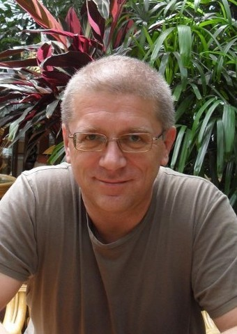

| Pokój 3006 | ||
|
Konsultacje w semestrze letnim roku akademickiego 2021/2022 (zdalnie) |
||
| W środy od 13.15 do 14.45 | ||
| W czwartki od 13.15 do 14.00 |
| | | 1988-2000 | | | 2001 | | | 2002 | | | 2003 | | | 2004 | | | 2005 | | | 2006 | | | 2007 | | | 2008 | | | 2009 | | | 2010 | | | ||
| | | 2011 | | | 2012 | | | 2013 | | | 2014 | | | 2015 | | | 2016 | | | 2017 | | | 2018 | | | 2019 | | | 2020 | | | 2021 | | |
| | DBLP | | PBN | |
Agnieszka M. Zbrzezny, Andrzej Zbrzezny, Bozena Wozna-Szczesniak.
SMT-based BMC for Dense Timed Interpreted Systems and EMTLK Properties.
ICAART (1) 2022: 345-352.
DOI: 10.5220/0010882100003116
Sabina Szymoniak, Olga Siedlecka-Lamch, Agnieszka M. Zbrzezny, Andrzej Zbrzezny, Miroslaw Kurkowski
SAT and SMT-Based Verification of Security Protocols Including Time Aspects
Sensors 2021, 21(9), 3055, MDPI.
DOI: 10.3390/s21093055
Heiko Bühler, Andrzej Zbrzezny, Agnieszka M. Zbrzezny, Andreas Walz, Axel Sikora
Towards a Formal Verification of Seamless Cryptographic Rekeying in Real-Time Communication Systems.
IDAACS 2021: 343-347.
DOI: 10.1109/IDAACS53288.2021.9660937
Agnieszka M. Zbrzezny, Andrzej Zbrzezny, Sabina Szymoniak, Olga Siedlecka-Lamch, Miroslaw Kurkowski
VerSecTis - An Agent based Model Checker for Security Protocols
AAMAS 2020: Proceedings of the 20th International Conference on Autonomous Agents and Multiagent Systems,
str. 2123-2125,
Auckland, New Zealand, May 9-13, 2020.
URI: https://dl.acm.org/doi/abs/10.5555/3398761.3399096
Magdalena Kacprzak, Anna Sawicka, Andrzej Zbrzezny
SMT-Based Encoding of Argumentation Dialogue Games
Artificial Intelligence and Soft Computing. ICAISC 2019.
Lecture Notes in Computer Science, vol 11509, str. 564-574. Springer, Cham
DOI: 10.1007/978-3-030-20915-5_50
Magdalena Kacprzak, Anna Sawicka, Andrzej Zbrzezny
Towards Encoding of the Transition Relation in Dialogue Games Model Checking.
Fundamenta Informaticae, 165(3-4), str. 345-361. IOS Press, 2019.
DOI: 10.3233/FI-2019-1789
Agnieszka M. Zbrzezny, Andrzej Zbrzezny
SAT-based BMC approach to Verifying Real-Time Properties of Multi-Agent Systems
IEEE Proceedings: 15th ACS/IEEE International Conference on Computer Systems and Applications
October 28th to November 1st, 2018
DOI: 10.1109/AICCSA.2018.8612803
Magdalena Kacprzak, Anna Sawicka, Andrzej Zbrzezny, Krzysztof Rzeńca, Katarzyna Żukowska
A Formal Model of an Argumentative Dialogue in the Management of Emotions.
Logic and Logical Philosophy, 27(4), str. 471-490. Wydawnictwo Naukowe Uniwersytetu Mikołaja Kopernika, 2018.
DOI: 10.12775/LLP.2017.024
Magdalena Kacprzak, Anna Sawicka, Andrzej Zbrzezny
Modelling the Affective Power of Locutions in a Persuasive Dialogue Game.
Artificial Intelligence and Soft Computing. ICAISC 2018.
Lecture Notes in Computer Science, vol 10842 str. 557-559. Springer, Cham
DOI: 10.1007/978-3-319-91262-2_49
Bożena Woźna-Szcześniak, Agnieszka M. Zbrzezny, Andrzej Zbrzezny
SMT-based Searching for k-quasi-optimal Runs in Weighted Timed Automata
Fundamenta Informaticae, 152(4), str. 411-433. IOS Press, 2017.
DOI: 10.3233/FI-2017-1527
Agnieszka M. Zbrzezny, Andrzej Zbrzezny
Simple SMT-Based Bounded Model Checking for Timed Interpreted Systems
IJCRS 2017: International Joint Conference on Rough Sets, Olsztyn, Poland, July 3–7, 2017.
International Joint Conference, IJCRS 2017, Olsztyn, Poland, July 3–7, 2017, Proceedings
Lecture Notes in Computer Science, tom 10314, str. 487-504. Springer International Publishing, 2017.
DOI: 10.1007/978-3-319-60840-2_35
Anna Sawicka, Magda Kacprzak, Andrzej Zbrzezny
A Novel Description Language for Two-Agent Dialogue Games
IJCRS 2017: International Joint Conference on Rough Sets, Olsztyn, Poland, July 3–7, 2017.
International Joint Conference, IJCRS 2017, Olsztyn, Poland, July 3–7, 2017, Proceedings
Lecture Notes in Computer Science, tom 10314, str. 466-486. Springer International Publishing, 2017.
DOI: 10.1007/978-3-319-60840-2_34
Agnieszka M. Zbrzezny, Andrzej Zbrzezny
Simple Bounded MTLK Model Checking for Timed Interpreted Systems
Agent and Multi-Agent Systems: Technology and Applications
11th KES International Conference, KES-AMSTA 2017 Vilamoura, Algarve, Portugal,
June 2017 Proceedings.
Smart Innovation, Systems and Technologies, tom 74, str. 88-98.
Springer International Publishing Switzerland, 2017.
DOI: 10.1007/978-3-319-59394-4_9
Agnieszka M. Zbrzezny, Andrzej Zbrzezny
Verifying Real-Time Properties of Multi-agent Systems via SMT-Based Bounded Model Checking
PRIMA 2016: Principles and Practice of Multi-Agent Systems.
19th International Conference, Phuket, Thailand, August 22-26, 2016, Proceedings.
Lecture Notes in Computer Science, tom 9862, str. 149-167. Springer-Verlag, 2016.
Agnieszka M. Zbrzezny, Andrzej Zbrzezny, Franco Raimondi
Efficient Model Checking Timed and Weighted Interpreted Systems Using SMT and SAT Solvers
Agent and Multi-Agent Systems: Technology and Applications
10th KES International Conference, KES-AMSTA 2016 Puerto de la Cruz,
Tenerife, Spain, June 2016 Proceedings.
Smart Innovation, Systems and Technologies, tom 58, str. 45-55.
Springer International Publishing Switzerland, 2016.
The winners of the Best Research Paper Award.
KES-AMSTA-16.
Bożena Woźna-Szcześniak, Andrzej Zbrzezny
Checking EMTLK Properties of Timed Interpreted Systems via Bounded Model Checking
Studia Logica, 104(4), str. 641-678. Springer Netherlands, 2016.
Magdalena Kacprzak, Anna Sawicka, Andrzej Zbrzezny
Towards Verification of Dialogue Protocols: A Mathematical Model
Artificial Intelligence and Soft Computing.
15th International Conference, ICAISC 2016, Zakopane, Poland, June 12-16, 2016, Proceedings, Part II.
Volume 9693 Lecture Notes in Computer Science, tom 9693, str. 329-339.
Springer Verlag, 2016.
Magdalena Kacprzak, Anna Sawicka, Andrzej Zbrzezny
Dialogue Systems: Modeling and Prediction of their Dynamics
Proceedings of the Second International Afro-European Conference
for Industrial Advancement AECIA 2015 (AECIA 2015).
Advances in Intelligent Systems and Computing, tom 427, str. 421-431. Springer International Publishing, 2016.
Agnieszka M. Zbrzezny, Andrzej Zbrzezny
Checking WELTLK Properties of Weighted Interpreted Systems via SMT-Based Bounded Model Checking
PRIMA 2015: Principles and Practice of Multi-Agent Systems.
18th International Conference, Bertinoro, Italy, October 26-30, 2015, Proceedings.
Lecture Notes in Computer Science, tom 9387, str. 660-669. Springer-Verlag, 2015.
Bożena Woźna-Szcześniak, Agnieszka M. Zbrzezny, Andrzej Zbrzezny.
SMT-based searching for k-quasi-optimal runs in weighted timed automata (Extended Abstract).
Materiały konferencji: Concurrency, Specification and Programming (CS&P 2015),
str. 196-206.
Uniwersytet Rzeszowski, 2015. ISBN 978-83-7996-181-8.
Agnieszka M. Zbrzezny, Andrzej Zbrzezny
Checking WECTLK Properties of Timed Real-Weighted Interpreted Systems via SMT-based Bounded Model Checking
17th Portuguese Conference on Artificial Intelligence (EPIA'2015) Proceedings
Lecture Notes in Artificial Intelligence, tom 9273, str. 638-650. Springer-Verlag, 2015.
Agnieszka M. Zbrzezny, B. Woźna-Szcześniak, Andrzej Zbrzezny
SMT-based Bounded Model Checking for Weighted Epistemic ECTL
17th Portuguese Conference on Artificial Intelligence (EPIA'2015) Proceedings
Lecture Notes in Artificial Intelligence, tom 9273, str. 651-657. Springer-Verlag, 2015.
Agnieszka M. Zbrzezny, Andrzej Zbrzezny
Checking RTECTL Properties of STSs via SMT-based Bounded Model Checking
Distributed Computing and Artificial Intelligence, 12th International Conference (DCAI 2015).
Advances in Intelligent Systems and Computing, tom 373, str. 55-62. Springer International Publishing, 2015.
Agnieszka M. Zbrzezny, Bożena Woźna-Szcześniak, Andrzej Zbrzezny
SMT-based Bounded Model Checking for Weighted Interpreted Systems and for Weighted Epistemic ECTL
AAMAS 2015: Proceedings of the 15th International Conference on Autonomous Agents and Multiagent Systems,
str. 1671-1672,
Istambul, Turkey, May 4-8, 2015.
Bożena Woźna-Szcześniak, Ireneusz Szcześniak, Agnieszka M. Zbrzezny, Andrzej Zbrzezny
Bounded Model Checking for Weighted Interpreted Systems and for Flat Weighted Epistemic Computation Tree Logic
PRIMA 2014: Principles and Practice of Multi-Agent Systems.
17th International Conference, Gold Coast, QLD, Australia, December 1-5, 2014. Proceedings.
Lecture Notes in Computer Science, tom 8861, str. 107-115. Springer-Verlag, 2014.
Bożena Woźna-Szcześniak, Andrzej Zbrzezny
Checking MTL Properties of Discrete Timed Automata via Bounded Model Checking
Fundamenta Informaticae, 135(4), str. 553-568. IOS Press, 2014.
Agnieszka M. Zbrzezny, Andrzej Zbrzezny.
A comparison of SAT-based and SMT-based bounded model checking methods for ECTL*.
Materiały konferencji: Concurrency, Specification and Programming (CS&P'2014),
str. 293-300.
Chemnitz, 29 września-1 października 2014.
Maciej Rosół, Krzysztof Kołek, Dawid Knapik, Andrzej Turnau, Wojciech Zwonarz,
Bożena Woźna-Szcześniak, Agnieszka M. Zbrzezny, Andrzej Zbrzezny.
Selected Applications of Real Time Systems.
Anglojęzyczna monografia naukowa, Polish Information Processing Society, Wydawnictwo Nakom, Poznań, 2014.
Artur Męski, Wojciech Penczek, Maciej Szreter, Bożena Woźna-Szcześniak, Andrzej Zbrzezny
BDD- versus SAT-based Bounded Model Checking for the Existential Fragment
of Linear Temporal Logic with Knowledge: Algorithms and their Performance.
Autonomous Agents and Multi-Agent Systems, 28(4), str. 558-604. Springer, 2014.
Wersja online.
Bożena Woźna-Szcześniak, Agnieszka M. Zbrzezny, Andrzej Zbrzezny
SAT-Based Bounded Model Checking for Weighted Interpreted Systems and Weighted Linear Temporal Logic
PRIMA 2013: Principles and Practice of Multi-Agent Systems.
16th International Conference, Dunedin, New Zealand, December 1-6, 2013. Proceedings.
Lecture Notes in Computer Science, tom 8291, str. 355-371. Springer-Verlag, 2013.
Andrzej Zbrzezny
On Boolean Encodings of Transition Relation for Parallel Compositions of Transition Systems.
Materiały konferencji: Concurrency, Specification and Programming (CS&P'2013),
str. 478-489.
Wersja online
Warszawa, 25-27 Września 2013.
Bożena Woźna Szcześniak, Andrzej Zbrzezny
Checking MTL Properties of Discrete Timed Automata via Bounded Model Checking.
Materiały konferencji: Concurrency, Specification and Programming (CS&P'2013),
str. 469-477.
Wersja online
Warszawa, 25-27 Września 2013.
Bożena Woźna-Szcześniak, Agnieszka M. Zbrzezny, Andrzej Zbrzezny.
SAT-based Bounded Model Checking for Metric Temporal Logic and Simply-timed systems.
Konferencja Systemy Czasu Rzeczywistego (SCR 2013).
Rozdział 14 w anglojęzycznej monografii naukowej
Design, development and implementation of real time systems.
Zeszyty Rady Naukowej Polskiego Towarzystwa Informatycznego, str.181-190.
Warszawa, 2013.
Bożena Woźna-Szcześniak, Agnieszka M. Zbrzezny, Andrzej Zbrzezny
SAT-based Bounded Model Checking for RTECTL and Simply-timed systems.
10th European Workshop on Performance Engineering (EPEW 2013).
Lecture Notes in Computer Science, tom 8168, str. 337-349. Springer-Verlag, 2013.
Agata Janowska, Wojciech Penczek, Agata Pólrola, Andrzej Zbrzezny
Using Integer Time Steps for Checking Branching Time Properties of Time Petri Nets.
Transactions on Petri Nets and Other Models of Concurrency VIII
Lecture Notes in Computer Science, tom 8100, str. 89-105. Springer-Verlag, 2013.
Artur Męski, Bożena Woźna-Szcześniak, Agnieszka M. Zbrzezny, Andrzej Zbrzezny
Two Approaches to Bounded Model Checking for a Soft Real-Time Epistemic Computation Tree Logic
Distributed Computing and Artificial Intelligence, 10th International Conference (DCAI 2013).
Advances in Intelligent Systems and Computing, tom 217, str. 483-492. Springer-Verlag, 2013.
Bożena Woźna-Szcześniak, Andrzej Zbrzezny
A translation of the existential model checking problem from MITL to HLTL
Fundamenta Informaticae, 122(4), str. 401-420. IOS Press, 2013.
Bożena Woźna-Szcześniak, Andrzej Zbrzezny
SAT-Based BMC for Deontic Metric Temporal Logic and Deontic Interleaved Interpreted Systems
Declarative Agent Languages and Technologies X (DALT 2012) Revised Selected and Invited Papers.
Lecture Notes in Artificial Intelligence, tom 7784, str. 170-189. Springer-Verlag, 2013.
Andrzej Zbrzezny
A new translation from ECTL* to SAT.
Fundamenta Informaticae, 120(3-4), str. 377-397. IOS Press, 2012.
Niewiadomski Artur, Penczek Wojciech, Półrola Agata, Szreter Maciej, Zbrzezny Andrzej
Towards Automatic Composition of Web Services: SAT-based Concretisation of Abstract Scenarios.
Fundamenta Informaticae, 120(2), str. 181-203. IOS Press, 2012.
Wojciech Penczek, Bożena Woźna-Szcześniak, Andrzej Zbrzezny
Towards SAT-based BMC for LTLK over Interleaved Interpreted Systems.
Fundamenta Informaticae, 119(3-4), str. 373-392. IOS Press, 2012.
Bożena Woźna-Szcześniak, Andrzej Zbrzezny
SAT-Based Bounded Model Checking for Deontic Interleaved Interpreted Systems
KES-AMSTA 2012
Lecture Notes in Artificial Intelligence, tom 7327, str. 504–513. Springer-Verlag, 2012.
Artur Męski, Wojciech Penczek, Maciej Szreter, Bożena Woźna-Szcześniak, Andrzej Zbrzezny
Bounded model checking for knowledge and linear time
AAMAS 2012: Proceedings of the 11th International Conference on Autonomous Agents and Multiagent Systems,
str. 1447-1448,
Valencia, Spain, June 4-8, 2012.
Artur Męski, Wojciech Penczek, Maciej Szreter, Bożena Woźna-Szcześniak, Andrzej Zbrzezny
Two Approaches to Bounded Model Checking for Linear Time Logic with Knowledge
KES-AMSTA 2012
Lecture Notes in Artificial Intelligence, tom 7327, str. 514–523. Springer-Verlag, 2012.
Agata Janowska, Wojciech Penczek, Agata Półrola, Andrzej Zbrzezny
Using Integer Time Steps for Checking Branching Time Properties of Time Petri Nets
Proceedings of the International Workshop on Petri Nets and Software Engineering (PNSE-2012)
CEUR Workshop Proceedings vol. 851, str. 15-31, 2012.
Bożena Woźna-Szcześniak, Agnieszka Zbrzezny, Andrzej Zbrzezny.
Verifying RTECTL Properties of a Train Controller System.
Scientific Issues, Jan Długosz University in Częstochowa, Mathematics XVI, str. 153-162, 2011.
Dariusz Doliwa, Wojciech Horzelski, Mariusz Jarocki, Artur Niewiadomski, Wojciech Penczek, Agata Półrola, Maciej Szreter, Andrzej Zbrzezny
PlanICS - a Web Service Composition Toolset
Fundamenta Informaticae 112(1), str. 47-71. IOS Press, 2011.
B. Woźna-Szcześniak, Agnieszka Zbrzezny, Andrzej Zbrzezny
The BMC method for the existential part of RTCTLK and interleaved interpreted systems.
15th Portuguese Conference on Artificial Intelligence (EPIA'2011) Proceedings
Lecture Notes in Artificial Intelligence, tom 7026, str. 551–565. Springer-Verlag, 2011.
Andrzej Zbrzezny
A new translation from ECTL* to SAT.
Materiały konferencji: Concurrency, Specification and Programming (CS&P'2011),
str. 589-600.
Pułtusk, 28-30 Wrzesień 2011.
Wojciech Penczek, Bożena Woźna, Andrzej Zbrzezny
Towards SAT-based BMC for LTLK over Interleaved Interpreted Systems.
Materiały konferencji: Concurrency, Specification and Programming (CS&P'2011),
str. 565-576.
Pułtusk, 28-30 Wrzesień 2011.
Agata Janowska, Wojciech Penczek, Agata Półrola, Andrzej Zbrzezny
Towards Discrete-Time Verification of Time Petri Nets with Dense-Time Semantics.
Materiały konferencji: Concurrency, Specification and Programming (CS&P'2011),
str. 215-228.
Pułtusk, 28-30 Wrzesień 2011.
Artur Męski, Wojciech Penczek, Agata Półrola, Bożena Woźna-Szcześniak, Andrzej Zbrzezny
Bounded Model Checking approaches for verification of Distributed Time Petri Nets.
Materiały międzynarodowych warsztatów: Petri Nets and Software Engineering,
tom. 723, str. 72-91.
Newcastle upon Tyne, UK. Uniwersytet Hamburgski, 20-21 Czerwiec, 2011.
Wojciech Penczek, Agata Pólrola, Andrzej Zbrzezny
SAT-Based (Parametric) Reachability for a Class of Distributed Time Petri Nets.
Transactions on Petri Nets and Other Models of Concurrency IV.
Lecture Notes in Computer Science 6550 Springer 2010, str. 72-97.
Michal Knapik, Artur Niewiadomski, Wojciech Penczek, Agata Pólrola, Maciej Szreter, Andrzej Zbrzezny
Parametric Model Checking with VerICS.
Transactions on Petri Nets and Other Models of Concurrency IV.
Lecture Notes in Computer Science 6550 Springer 2010, str. 98-120.
Andrzej Zbrzezny.
A Boolean Encoding of Arithmetic Operations.
Scientific Issues, Jan Długosz University in Częstochowa, Mathematics XV, str. 177-190, 2010.
Bożena Woźna-Szcześniak, Andrzej Zbrzezny.
SAT-based searching for k-quasi-optimal runs in weighted timed automata.
Scientific Issues, Jan Długosz University in Częstochowa, Mathematics XV, str. 149-162, 2010.
B. Woźna, A. Zbrzezny
A translation of the existential model checking problem from MITL to X-LTL
Materiały konferencji: Concurrency, Specification and Programming (CS&P'2010),
str. 383-396.
Helenenau, Niemcy, 27-29 Wrzesień 2010.
A. Niewiadomski, W. Penczek, A. Półrola, M. Szreter, A. Zbrzezny
SAT-Based Concretisation of Abstract Scenarios
Materiały konferencji: Concurrency, Specification and Programming (CS&P'2010),
str. 231-242
D. Doliwa, W. Horzelski, M. Jarocki, A. Niewiadomski, W. Penczek, A. Półrola, M. Szreter, A. Zbrzezny
Web Service Composition Toolset
Materiały konferencji: Concurrency, Specification and Programming (CS&P'2010),
str. 131-141.
Helenenau, Niemcy, 27-29 Wrzesień 2010.
W. Penczek, A. Półrola, A. Zbrzezny
Towards Automatic Composition of Web Services: A SAT-Based Phase.
Proc. of the 2nd Int. Workshop on Abstractions for Petri Nets
and Other Models of Concurrency
and of the Int. Workshop on Scalable and Usable Model Checking
(APNOC'10 + SUMO'10),
str. 76-96.
Braga, Portugalia, Czerwiec 2010.
B. Woźna, A. Zbrzezny
SAT-based searching for k-quasi-optimal runs in weighted timed automata
Materiały konferencji: Concurrency, Specification and Programming (CS&P'2009),
str. 661-673.
Kraków-Przegorzały, 28-30 wrzesień 2009.
A. Rataj, B. Woźna, A. Zbrzezny
A translator of Java programs to TADDs
Fundamenta Informaticae 93(1-3), str. 305-324. IOS Press, 2009.
B. Woźna, A. Zbrzezny
Model checking of Java programs using networks of FADDs
Scientific Issues, Jan Długosz University in Częstochowa, Mathematics XIV, str. 151-164, 2009.
Wojciech Penczek, Agata Półrola, Andrzej Zbrzezny
SAT-Based (Parametric) Reachability for Distributed Time Petri Nets
Materiały konferencji: International Workshop on Petri Nets and Software Engineering (PNSE'09)
str.133-156, University of Hamburg, Department of Informatics. Paryż, Francja, Czerwiec 22-23, 2009.
Kacprzak M., Nabiałek W., Niewiadomski A., Penczek W., Półrola A., Szreter M., Woźna B., Zbrzezny A.
VerICS 2008 - a Model Checker for Time Petri Nets and High-Level Languages
Materiały konferencji: International Workshop on Petri Nets and Software Engineering (PNSE'09)
str.119-132, University of Hamburg, Department of Informatics. Paryż, Francja, Czerwiec 22-23, 2009.
A. Zbrzezny
Improving the
Translation from ECTL to SAT
Fundamenta Informaticae, 85(1-4), str. 513-531. IOS Press, 2008.
A. Zbrzezny, B. Woźna
Towards
verification of Java programs in Verics
Fundamenta Informaticae, 85(1-4), str. 532-548. IOS Press, 2008.
M. Kacprzak, W. Nabiałek, A. Niewiadomski, W. Penczek, A.
Półrola, M. Szreter, B. Woźna, A. Zbrzezny
VerICS 2007 -
a Model Checker for Knowledge and Real-Time
Fundamenta Informaticae, 85(1-4), str. 313-328. IOS Press, 2008.
A. Zbrzezny
A Boolean Encoding of Arithmetic Operations
Materiały konferencji: Concurrency, Specification and Programming (CS&P'2008),
volume 3, str. 536-547
Groß Väter See, September 2008.
A. Rataj, B. Woźna, A. Zbrzezny
A translator of Java programs to TADDs
Materiały konferencji: Concurrency, Specification and Programming (CS&P'2008),
volume 3, str. 524-535
Groß Väter See, September 2008.
Kacprzak M., Nabiałek W., Niewiadomski A., Penczek W., Półrola A., Szreter M., Woźna B., Zbrzezny A
VerICS 2008 - a Model Checker for High-Level Languages
Artificial Intelligence Studies, 2008, tom. 5 (28)/2008, str.131-140.
B. Woźna, A. Zbrzezny
A SAT-based technique to analyse networks of finite automata
Scientific Issues: Mathematica II,
str. 89-99. Catholic University in Ruzomberok, 2008.
A. Zbrzezny
Improving the
Translation from ECTL to SAT (pdf).
In Proceedings of CS&P'2007 Workshop, volume 2, str.
568-579, Łagów, September 2007.
A. Zbrzezny, A. Półrola.
SAT-Based
Reachability Checking for Timed Automata with Discrete
Data
Fundamenta Informaticae 79(3-4), str. 579-593. IOS Press, 2007.
B. Woźna, A. Zbrzezny.
Bounded Model
Checking for the Existential Fragment of TCTL_G and Diagonal Timed
Automata.
Fundamenta Informaticae 79(1-2), str. 229-256. IOS Press, 2007.
A. Lomuscio, B. Woźna, A. Zbrzezny.
Bounded model
checking real-time multi-agent systems with clock differences:
theory and implementation.
In Post-Proceedings of the 4th Workshop on Model Checking and
Artificial Intelligence (MoChArt'06), LNAI/LNCS, volume 4428,
str. 96-112. Springer-Verlag, 2007.
M. Kurkowski, W. Penczek, A. Zbrzezny.
SAT-based
Verification of Security Protocols via Translation to Networks of
Automata.
In Post-Proceedings of the 4th Workshop on Model Checking and
Artificial Intelligence (MoChArt'06), LNAI/LNCS, volume 4428,
str. 146-165. Springer-Verlag, 2007.
A. Zbrzezny.
A Boolean Encoding of Arithmetic Operations. (gzipped ps).
Report ICS PAS, 999, January 2007.
A. Zbrzezny, A. Półrola.
SAT-Based
Reachability Checking for Timed Automata with Discrete
Data
In Proceedings of CS&P'2006 Workshop, volume 2, str.
207-218, Wandlitz 2006.
A. Zbrzezny.
SAT-based
Reachability Checking for Timed Automata with Diagonal
Constraints.
Fundamenta Informaticae 67(1-3), str. 303-322. IOS Press, 2005.
B. Woźna, A. Zbrzezny.
Bounded Model
Checking for the Existential Fragment of TCTL and Diagonal Timed
Automata.
In Proceedings of the CS&P'2005 Workshop, volume 2, str.
586-597, Ruciane Nida 2005
B. Woźna, A. Zbrzezny.
Checking ACTL*
Properties of Discrete Timed Automata via Bounded Model
Checking.
In Proceedings of FORMATS'2003, volume 2791 of LNCS, str. 18
- 33, Springer-Verlag, 2004.
B. Woźna, A. Zbrzezny.
Checking ACTL*
properties of Discrete Timed Automata via Bounded Model
Checking. (Revised version of the paper published in
Proceedings of the 1st International Workshop on Formal Analysis
and Modeling of Timed Systems).
Technical Report TR-04-04, Department of Computer Science,
King's College London, 2004.
A. Zbrzezny.
Improvements
in SAT-based Reachability Analysis for Timed Automata.
Fundamenta Informaticae 60(1-4), str. 417-434. IOS Press, 2004.
W. Penczek, A. Półrola, B. Woźna, A. Zbrzezny.
Bounded Model
Checking for Reachability Testing in Time Petri Nets.
In Proceedings of CS&P'2004 Workshop, volume 1, str.
124-135, Caputh 2004
A. Zbrzezny.
A
New Discretization for Timed Automata.
In Proceedings of CS&P'2004 Workshop, volume 1, str.
178-189, Caputh 2004
P. Dembiński, A. Janowska, P. Janowski, W. Penczek, A. Półrola,
M. Szreter, B. Woźna, A. Zbrzezny.
VERICS: A Tool
for Verifying Timed Automata and Estelle Specifications.
In Proc. of the 9th Int. Conf. on Tools and Algorithms for
Construction and Analysis of Systems (TACAS'03), volume 2619 of
LNCS, str. 278-283, Springer-Verlag, 2003.
B. Woźna, A. Zbrzezny.
Reaching the
limits for Bounded Model Checking.
Report ICS PAS, 958, May 2003.
B. Woźna, A. Zbrzezny, W. Penczek.
Checking
Reachability Properties for Timed Automata via SAT.
Fundamenta Informaticae 55(2), str. 223-241. IOS Press, 2003.
P. Dembiński, A. Janowska, P. Janowski, W. Penczek, A. Półrola,
M. Szreter, B. Woźna, A. Zbrzezny.
VerICS:
weryfikator dla automatów czasowych i specyfikacji zapisanych w
języku Estelle (VerICS: A Tool for Verifying Timed Automata and
Estelle Specifications).
In Proc. of SCR'03, 2003.
A. Zbrzezny.
Improvements
in SAT-based Reachability Analysis for Timed Automata.
In Proceedings of the CS&P'2003 Workshop, volume 2, str.
606-619, Warsaw University, 2003.
W. Penczek, B. Woźna, A. Zbrzezny.
Branching Time
Bounded Model Checking for Elementary Net Systems.
Report ICS PAS, 940, January 2002.
W. Penczek, B. Woźna, A. Zbrzezny.
Bounded Model
Checking for the Universal Fragment of CTL.
Fundamenta Informaticae, volume 51(1-2), str 135-156. IOS Press, 2002.
W. Penczek, B. Woźna, A. Zbrzezny.
Towards
Bounded Model Checking for the Universal Fragment of
TCTL.
In Proceedings of FTRTFT'02, volume 2469 of LNCS,
Springer-Verlag, 2002.
B. Woźna, W. Penczek, A. Zbrzezny.
Reachability
for Timed Systems based on SAT-Solvers.
In Proceedings of CS&P'2002 Workshop, volume 2, Berlin
2002
W. Penczek, B. Woźna, A. Zbrzezny.
SAT-Based
Bounded Model Checking for the Universal Fragment of
TCTL.
Report ICS PAS, 947, September 2002
B. Woźna, W. Penczek, A. Zbrzezny.
Checking
Reachability Properties for Timed Automata via SAT.
Report ICS PAS, 949, October 2002
A. Zbrzezny.
A
note on some class of locally Boolean Algebras.
Prace Naukowe Wyższej Szkoły Pedagogicznej w Częstochowie,
Matematyka VIII (2000-2001) str. 107-112.
A. Zbrzezny.
The Gentzen
type axiomatization of some three-valued propositional
logic.
Bulletin of the Section of Logic 17 (1988), str. 70-74.
A. Zbrzezny.
The sequent
axiomatization of some three-valued propositional logic.
Proceedings of the V Universal Algebra Symposium, Universal and
Applied Algebra, Turawa 1988, World Scientific, Singapore, New
Jersey, London Hong Kong (1989) str. 378-388
A. Zbrzezny.
The Hilbert
type axiomatization of some three-valued propositional
logic.
Zeitschrift fur Marhematische Logik und Grundlagen der
Mathematik 36 (1990), str. 415-421.
A. Zbrzezny.
On
a three-valued internal logic of programs.
Prace Naukowe Wyższej Szkoły Pedagogicznej w Częstochowie,
Matematyka II (1996-1998) str. 105-121.
A. Zbrzezny.
Natural
deduction system for some three-valued propositional
logic.
Prace Naukowe Wyższej Szkoły Pedagogicznej w Częstochowie,
Matematyka VI (1999) str. 148-152.
1976-1981 - studia na kierunku Informatyka, Uniwersytet
Jagielloński
1981 - magister informatyki, Instytut Informatyki, Uniwersytet
Jagielloński
1991 - doktor nauk humanistycznych w zakresie filozofii; specjalność: logika, Wydział Nauk
Społecznych, Uniwersytet Wrocławski
2014 - doktor habilitowany nauk technicznych w dyscyplinie informatyka: stopień
nadany przez Radę Naukową Instytutu Podstaw Informatyki Polskiej Akademii Nauk
w Warszawie w dniu 16 stycznia 2014 r.
(szczegóły)
1981-1991 - asystent w Instytucie Matematyki Wyższej Szkoły
Pedagogicznej w Częstochowie
1991-2014 adiunkt w Instytucie Matematyki Wyższej Szkoły
Pedagogicznej w Częstochowie
od 2014 profesor nadzwyczajny w Instytucie Matematyki i Informatyki
Akademii im. Jana Długosza w Częstochowie
Szachy
Giełda
Tenis ziemny
ADRES SŁUŻBOWY
ul. Armii Krajowej 13/15
42-200 Częstochowa
e-mail: a.zbrzezny@ujd.edu.pl
 orcid.org/0000-0003-2771-9683
orcid.org/0000-0003-2771-9683